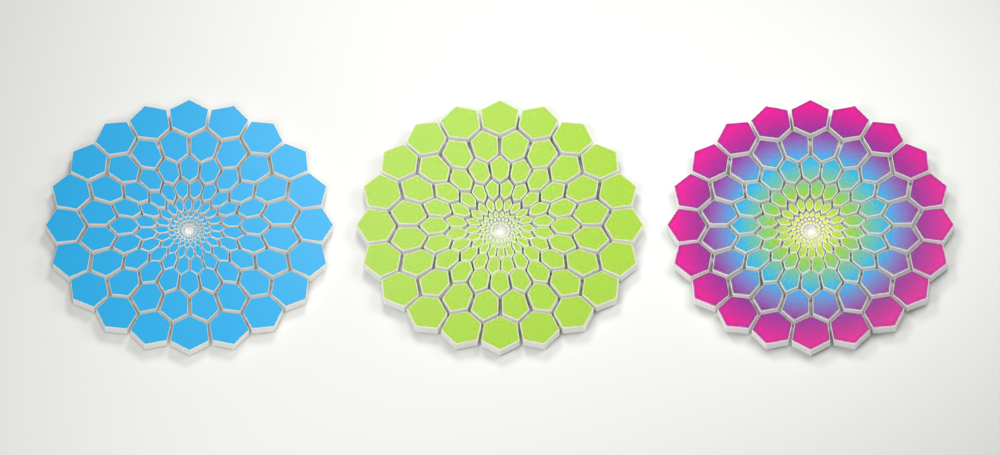
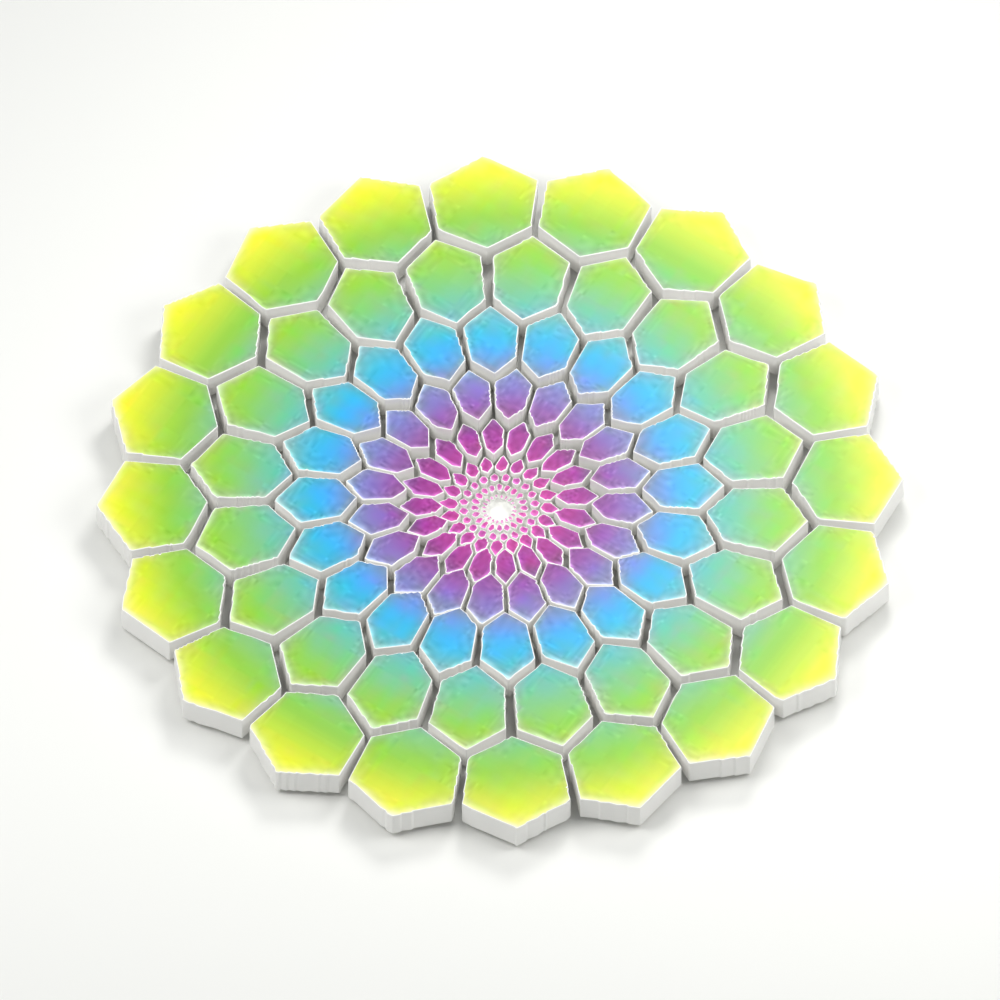
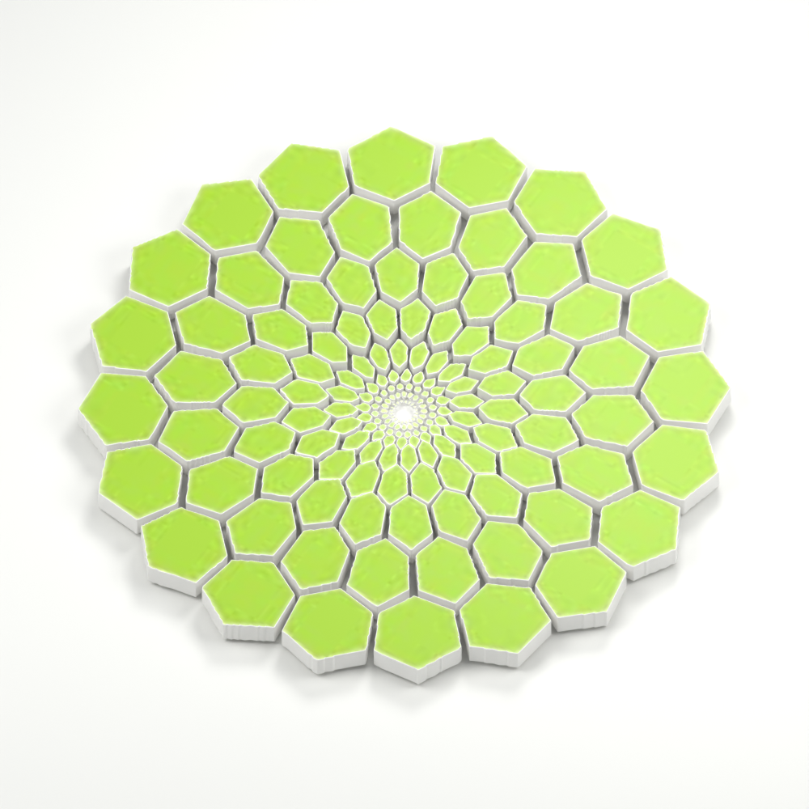
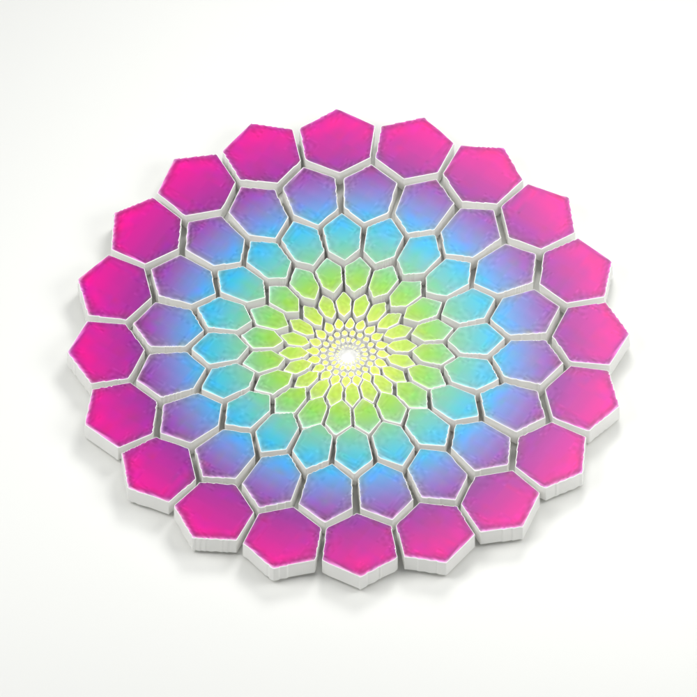
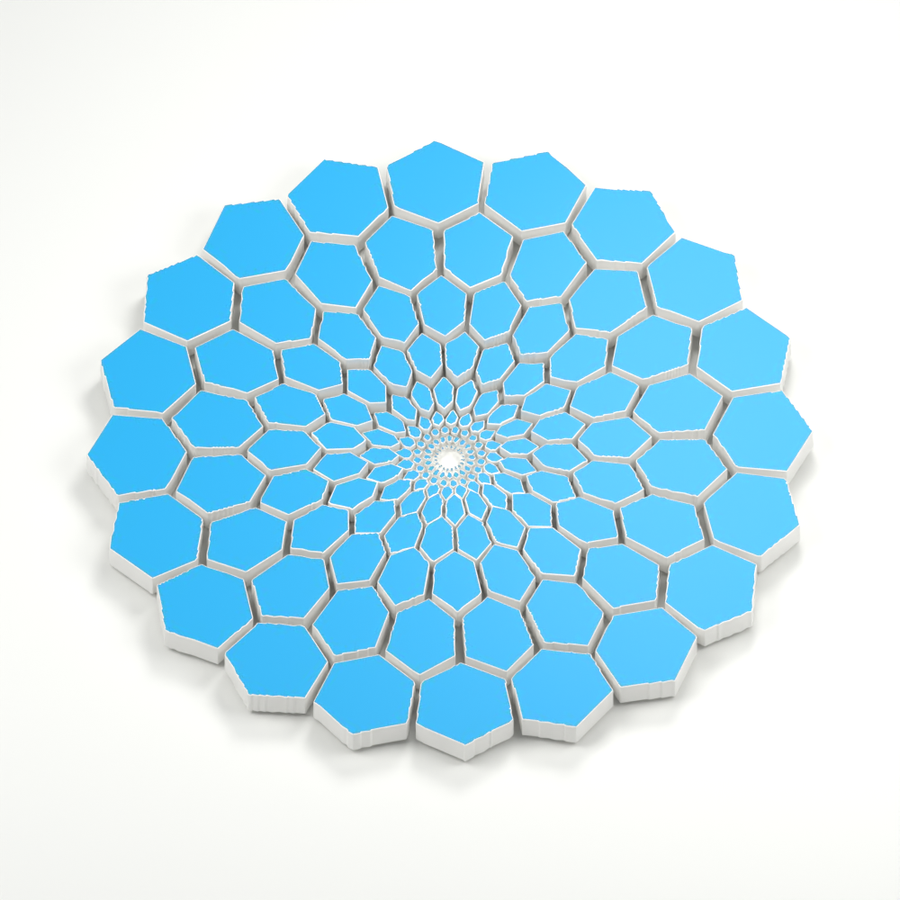
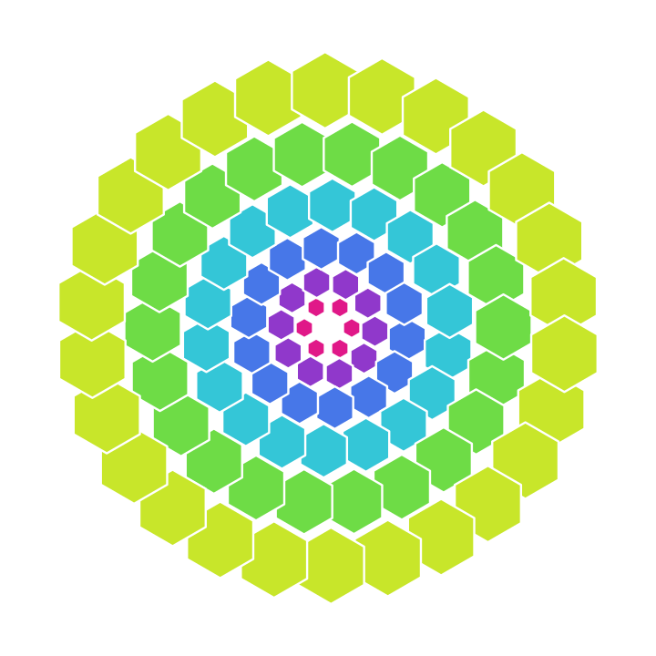
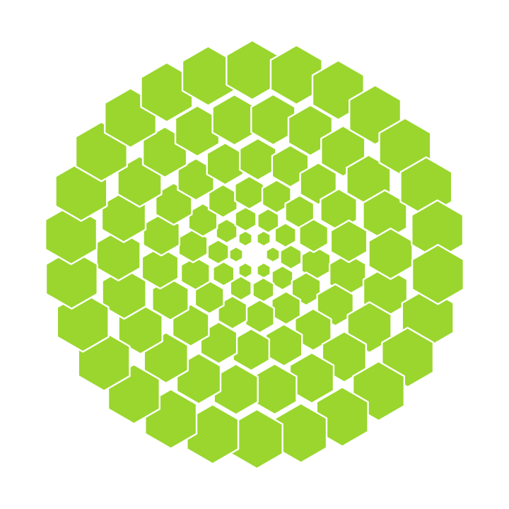
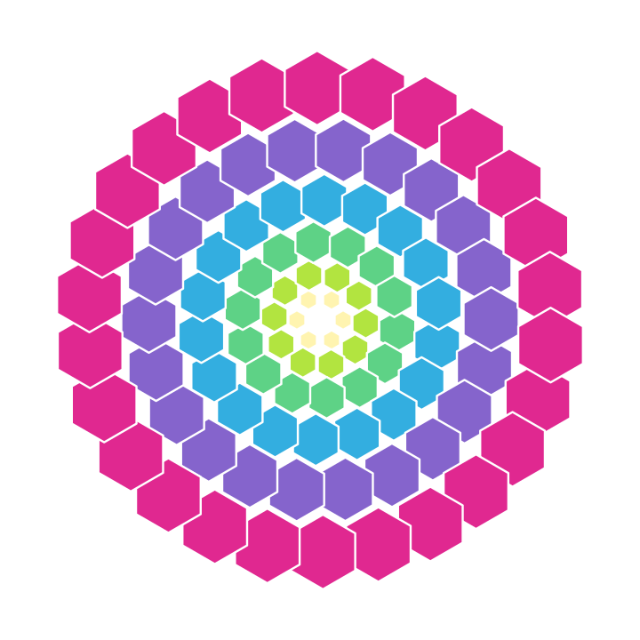
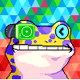
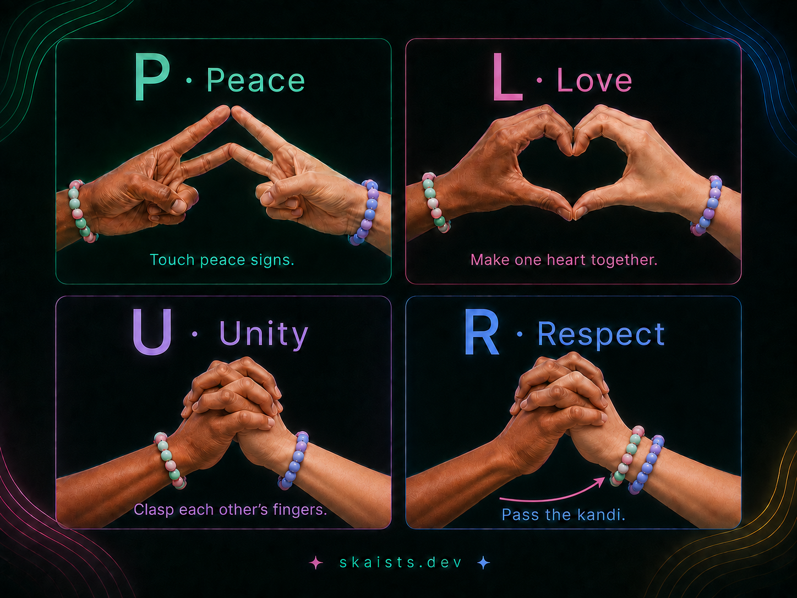

One New bee introduction
Today you can string a short word into a bracelet in this browser, keep it on a local arm, and hand a line of text to someone you already know how to reach. They can look at it before they keep it. You can look at Home for art, music, and people. Conversation, if you want it, still happens in Buzz — not inside this board.
Make a little color. Give it to someone.
Destination for this invitation: the kandi bar. A separate grand-opening door points only to Home. One destination per creative.
Genesis marks
Creators of the supplied originals: LoVis and his mother. Color has meaning: purple = humans, teal = AI, green = biomass. Mixed gradients stay intact. These colors are not New bee / Raver / Cypherpunk skins. Astra owns the original-based 3D study on draft PR #31 (ffb44283). This board copies stills and originals so the pack stays reviewable. Provenance: PROVENANCE.md · 3D study README.
Supplied originals
Unchanged founder + mother files — not reconstructions


Also in the pack: teal_BN_logo_transparent.png (689 kB) and teal_logo_magenta.png (561 kB). Digests: originals-receipt.md.
New 3D interpretation (stills)
Astra Blender study — depth and lighting are the interpretation, not the original files





GLB exports (5.41–6.09 MB) and the Blender master (~7.76 MB) stay on PR #31. They are an optional study until delivery is optimized. This board does not load them.
Provisional reconstructed SVGs
Earlier review proxies with chosen geometry and color stops. They do not establish the exact founder originals. They stay provisional now that the originals are on this board. They are not replaced unless a later commit actually swaps the files.



Founder color meaning
skaists and LOVErnment DAO are named organizations. New bee, Raver, and Cypherpunk remain presentations of the same facts.
Semantic UI (separate)
Used on kandi / PLUR surfaces for the four letters. Do not restyle an organization as a reading view.
Raver composition — skaists + LOVErnment + sourced art
New bee is the default reading. The same people, art, and DAO doors stay available in every view. skaists and LOVErnment DAO are named here because the founder asked for them — this is not a claim that DAO features shipped.
Same gift, same people, same art. Raver is where this still can move — only if you pick an expression.
Still: supplied original green-teal BN logo.jpg (15.3 kB). Overlay: lightweight CSS rings in this HTML. 3D still of the same original is optional below.
Measured delivery sizes (decimal)
Cited from Astra’s #31 receipt and files copied onto this branch. 1 kB = 1,000 bytes.
| Representation | This board? | Measured | Limit |
|---|---|---|---|
| green-teal BN logo.jpg (supplied original) | Yes — Raver still | 15.3 kB | Original file, not 3D |
| Individual 3D PNG stills | Yes, marks section | 1.06–1.14 MB | Interpretation, not original |
| original-blooms.png | Yes | 1.92 MB | Trio still |
| GLB study exports (#31) | Not copied | 5.41–6.09 MB | Optional until optimized |
| Blender master (#31) | Not copied | 7.76 MB | Editable study |
| 180-cell flat SVG probe | Not published as art | 34.9 kB / 9.5 kB gzip | Size probe, not finished artwork |
| This composition’s CSS rings | Yes | in marketing.html | Working CSS, not film |
Recommend compact reproducible artwork (original JPEG or a later approved vector) plus optional rich 3D. Continuous PLUR film remains open.
Same doors in every view: People Art gallery skaists Home LOVErnment DAO (source)
No simulated member counts. DAO participation beyond that public repository is not claimed here.
Sourced inscription snapshots (unchanged chain art)
These are the existing Home Raver-stage snapshots. Presentation on this board does not change the chain art. Credits and sources stay attached: surfaces/atlas-art/provenance.json.

Optional 3D still of the same original (not a GLB viewer)
15-second New bee cut and Raver adaptation
Same action and destination; different spoken color. Reduced-motion visitors get the caption list without auto-advance.
VO (New bee): “Make a little color. Give it to someone. Touch peace. Make one heart. Hold on. The gift leaves your arm.”
VO (Raver): “String it. Meet in the middle. The kandi crosses. What you give leaves your arm.”
Open the poster / static alternative Beats and production notes Go to the kandi bar
{kind=link}
Cypherpunk — matching source and limits
Same gift. Same destination. The card instead of a cut:
- Format
KND1|maker|for|ts36|beads|fnv— FNV-1a/32 over the payload. A checksum catches a mistype. It is not a signature, not unique ownership, not verified identity. - State key
localStorage.bkandiin this origin. No cookies, no inbox, no relay. Clearing site data, hitting quota, or another tab writing the same key ends the “forever” wording. - Gift / cross / show terminate at the OS clipboard (or selectable text if copy is refused). A person carries the line. Copied ≠ delivered ≠ kept.
- Arrival Keep (Show
#k=) has long been preview-first. At baseline832bdf83the leftover paste button#rcvgosaved immediately. After Astra’s integration (a70dafe), paste is also look-then-Keep (#rcvgopreviews;#rcvkeepwrites). - Live page: skaists.dev/surfaces/kandi.html. Receipt:
docs/dispatches/2026-09-07-astra-kandi-integration.md. Source checks and Pages publication are not human usability proof.
Founder-accepted PLUR continuity
One posed four-panel still. It is not film and not a continuous two-person animation. Continuous PLUR film remains an open production deliverable. A fade between signs would still not be the requested movement. Production notes below keep the founder canon for anyone who later films it.

cf82f9ed, edit prompts, dispatch 2026-09-07-plur-paired-hands.md.
Physical illustration
This PNG is a posed four-panel still. It is not motion capture, not deployed animation, and not completed film or audio. Show it once. Do not flip the same still on a timer and call that movement.
Software handoff (different picture)
The kandi page copies a text line. The person carries it in a chat they already have. There is no wrist, no inbox, and no proof the other person kept it until they preview and Keep in their browser. Do not use this still to claim remote delivery.
Claim-to-proof
Design still ≠ screen recording ≠ source publication ≠ human usability observation. Full table: claim-to-proof.md. Campaign-pack source read began at 832bdf83. Gift engine now live via Astra integration a70dafe (2026-09-07).
| Exact claim | Reader | Demonstrated action | Source / release | Proof type | Destination | Limit |
|---|---|---|---|---|---|---|
| You can string a bracelet in this browser today | Newcomer | Composer → right arm | Live kandi.html @ a70dafe |
Source publication + Pages | kandi bar | This board did not re-test the live composer. Not a filmed completion. |
| What you gift leaves your arm | Giver | Deliberate local completion; animation does not commit | Astra receipt @ a70dafe |
Source publication (integrator) | kandi bar | Not proof a recipient Keep. This creative PR did not edit the engine. |
| Arrival Keep is preview-first | Receiver via Show link | Arrival panel, then Keep | arrival #arKeep (true at 832bdf83 and now) |
Source publication | kandi bar | Separate from the old paste path. This browser only. |
| Pasted string is preview-first | Receiver via paste | Look, then Keep | Now #rcvgo preview + #rcvkeep. At 832bdf83 #rcvgo saved immediately. |
Source publication (post-integration) | kandi bar | Do not cite the baseline paste button as preview-first. |
| The string “stays / forever” | Anyone who read the old copy | Corrected: lives in localStorage.bkandi until cleared or another cooperating tab replaces it |
commitChange @ a70dafe |
Source publication | — | A failed new write does not erase previously committed storage. Not permanent. Not cross-device. |
| KND1 checksum means the piece is yours | Cypherpunk reader | Refuse this claim | codec comment: checksum, not signature | Source publication | — | No unique ownership, verified identity, or delivery receipt |
| PLUR wrist-to-wrist transfer | Raver / floor | Founder still, four panels, giver ends bare | cf82f9ed PNG | Design still (concept) | this board | Not software delivery. Not film. |
| 15-second New bee / Raver cuts exist as film | Reviewer | Caption stepper + one poster | this HTML | Storyboard-not-film | kandi bar | No video. No completed audio. Not continuous two-person animation. |
| Home is the grand opening | Visitor | Art / music / people | surfaces/index.html live on skaists.dev | Source + served Pages (Astra receipt) | Home | Not this gift creative’s landing |
Learning loop and festival
Observation
Anonymous attempt IDs and pair IDs. Separate clocks for local handoff and receiver Keep. Only declines before starting leave the attempted-handoff denominator. Agent fixtures are not people.
Festival hypothesis
Start with “What happened?” then what went well, then what was hard. Hypothetical text-string questions live in a separate concept-reaction section. Offline tolerance is an untested hypothesis. Need, host, costs, and willingness to pay remain UNKNOWN.
Production notes — choreography kept out of the spoken VO
- Same two partners. Same skin, wrists, bracelet identities. Notes for a later film — this board is not that film.
- Peace: V-sign fingertips touch.
- Love: touching fingertips. Each person makes half a heart; index and thumb tips meet.
- Unity: interlocked fingers. Not prayer hands. Not a business handshake.
- Respect: bracelet travels giver wrist → receiver wrist while fingers stay locked. The giver ends bare.